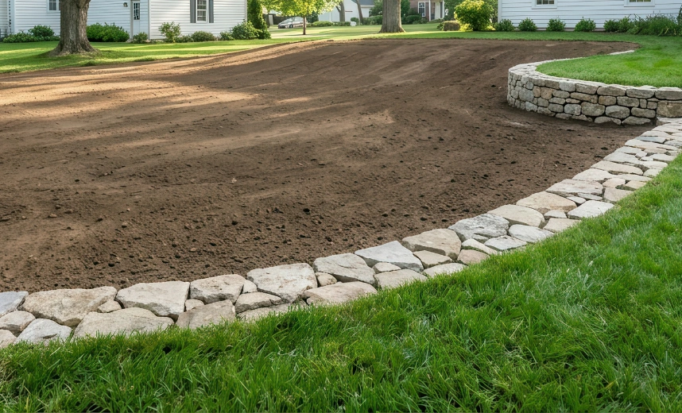
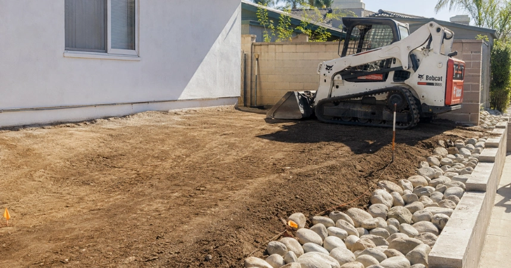

Grading and drainage address how rainwater moves across a property by correcting problem slopes and establishing more effective runoff paths. Our contractor network evaluates elevations, low areas, soil conditions, hardscape, and existing drainage to identify grading improvements suited to Los Angeles properties.
Proper grading helps direct surface water away from structures and areas where runoff repeatedly collects. Depending on site conditions, grading may work alongside drains, catch basins, swales, or underground piping to create a more complete approach to managing stormwater across the property.
Grading & Drainage Planning
Effective drainage starts with understanding the property's elevations and natural direction of water flow. Contractors represented by Drainage Pro LA assess slope transitions, low points, runoff sources, structures, and existing drainage conditions before recommending appropriate grading or drainage improvements.
Some properties require targeted grade corrections, while others benefit from combining grading with surface or underground drainage. The objective is to establish controlled runoff paths that move rainwater away from vulnerable areas without simply transferring the drainage problem elsewhere.

Grade Correction
Problem slopes are evaluated to improve runoff direction and reduce water collecting near structures.
Runoff Management
Drainage paths are planned to move surface water toward suitable collection and discharge areas.
When Grading Improvements Needed
Grading improvements may be appropriate when rainwater flows toward the home, collects beside foundations, remains in low areas, or crosses landscaping in an uncontrolled path. Uneven yards, altered landscaping, settled soil, and poorly directed runoff can also contribute to recurring drainage concerns.
A successful approach considers the entire drainage path rather than correcting one isolated area. Licensed contractors within our network evaluate elevation changes, surface flow, outlet conditions, surrounding improvements, and drainage components when determining how grading should function across the site.
Better Surface Flow
Improves how rainwater travels across graded areas and away from recurring problem locations.
Planned Water Direction
Establishes defined runoff paths based on property elevations and available drainage outlets.
Grading & Drainage FAQs
Learn about property grading, drainage slopes, runoff control, standing water, and other important considerations when planning grading and drainage improvements for a Los Angeles property.
Grading may be needed when rainwater consistently flows toward structures, collects in low areas, or follows undesirable paths across the property. An assessment can determine whether elevations or drainage components are contributing to the problem.
Yes, when standing water results from improper surface elevations or low areas. Regrading can improve runoff direction, although some properties may also require catch basins, drains, swales, or underground piping.
Surface grading generally needs to direct runoff away from structures toward an appropriate drainage path. The suitable slope and final drainage route depend on property elevations, surrounding improvements, and site-specific conditions.
Not always. Some drainage concerns can be improved through grade correction alone, while other properties require catch basins, channel drains, swales, or underground piping to collect and redirect runoff effectively.
Planning typically considers property elevations, existing slopes, runoff sources, low points, structures, soil conditions, drainage components, and suitable discharge locations before determining the appropriate grading and drainage approach.